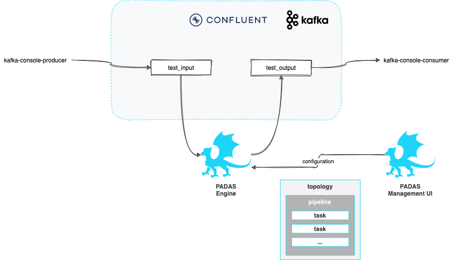

Quick Start
Use Padas to perform streaming event data transformations and apply specific rules to filter out sample data. This quick start guide assumes all components (Confluent Kafka and Padas) will be installed on the same machine. In production, it is recommended to separate out these components on different nodes/hosts.
Prerequisites
- Internet connectivity
- Review System Requirements
- Kafka (Apache, Confluent Community, etc.) must be installed and running (locally) (e.g. Quick Start for Confluent Platform).
- You should have at least Kafka Broker and Controller (or Zookeeper) services up and running.
confluent local services status ... Kafka is [UP] ZooKeeper is [UP] ...
Overview of Quickstart
Below diagram shows what will be accomplished with this quick start guide.

We will play with some mock data such as the following. Our goal will be to transform sample event data and apply a set of rules to generate alerts.
Sample input:
{
"user": "user_1",
"group_id": 5,
"action": "success"
}
We will have a couple of simple rules that will trigger when group_name (soon to be enriched field) matches "evil*" or when action results in failure.
NOTE: For the purposes of demo, the goal is carried with multiple tasks, where as a simple FILTER function can be utilized as well.
Step 1: Acquiring Padas
-
Contact with us to get the latest version of Padas Engine and UI components applicable to your platform.
padas-{{ current_version }}.tgz padas-ui-{{ current_version }}-linux-x64.tgz -
Use the
tarcommand to decompress the archive filetar -xzf padas-{{ current_version }}.tgz tar -xzf padas-ui-{{ current_version }}-linux-x64.tgz -
Once extracted, you should have
padasandpadas-uidirectories. By default, Padas Engine expects Kafka to be running onlocalhost. If that's not the case, editpadas/etc/padas.propertiesaccordingly.
At this stage, make sure you have Confluent Kafka is running as mentioned in prerequisites.
Step 2: Start Engine
At this stage, make sure you have Confluent Kafka is running as mentioned in prerequisites.
-
Start engine node on the console. The script will ask you to accept the license agreement (enter
y)cd padas/bin/padas start-console PADAS SOFTWARE LICENSE AGREEMENT ... Displayed Padas Software License Agreement contents can also be found at https://padas.io/legal/eula.html OR in file /<YOUR INSTALL DIR>/padas/etc/license.txt Do you agree with this license? [y/n]: y INFO Verifying Kafka broker connection... INFO Successfully verified Kafka Cluster connection. INFO Successfully verified existence of all required topics. INFO Starting web interface at https://<HOSTNAME>:8999 ... @@@@@@@@@@@@@@@@@@@@@@@@@@@@@@@@@@@@@@@@@@@@@@@@@@@@@@@@@@@@@@@@@@@@@@@@@@@@ @@@@@@@@@@@@@@@@@@@@@@@@@@@@@@@@*@@@@@@@@@@@@@@@@@@@@@@@@@@@@@@@@@@@@@@@@@@@ @@@@@@@@@@@@@@@@@@@@@@@@@@@@@:**@@@@@@@@@@@@@@@@@@@@@@@@@@@@@@@@@@@@@@@@@@@@ @@@@@@@@@@@@@@@@@@@@@@@@@@@:****:@@@@@@@@@@@**:****@@@@@@@@@@@@@@@@@@@@@@@@@ @@@@@@@@@@@@@@@@@@@@@@@@@**********:::**********@@@@@@@@@@@@@@@@@@@@@@@@@@@@ @@@@@@@@@@@@@@@@@@@@@@@:***********************@@@@@@@@@@@@@@@@@@@@@@@@@@@@@ @@@@@@@@@@@@@@@@@@@@@@************************:@@@@@@@@@@@@@@@@@@@@@@@@@@@@@ @@@@@@@@@@@@@@@@@@@@@**************************@@@@@@@@@@@@@@@@@@@@@@@@@@@@@ @@@@@@@@@@@@@@@@@@@@*****************************@@@@@@@@@@@@@@@@@@@@@@@@@@@ @@@@@@@@@@@@@@@@@@@********************************&@@@@@@@@@@@@@@@@@@@@@@@@ @@@@@@@@@@@@@@@@@@#***********************************::@@@@@@@@@@@@@@@@@@@@ @@@@@@@@@@@@@@@@@@**:************************************@@@@@@@@@@@@@@@@@@@ @@@@@@@@@@@@@@@@@@@@@@@@******************************@@@@@@@@@@@@@@@@@@@@@@ @@@@@@@@@@@@@@&*@@@@@@@@@@*************************@@@@@@@@@@@@@@@@@@@@@@@@@ @@@@@:**********@@@@@@@@@@@***********************@@@@@@@@@@@@@@@@@@@@@@@@@@ @@@@***********:@@@@@@@@@@@@********************o@@@@@@@@@@@@@@@@@@@@@@@@@@@ @@@@***********@@@@@@@@@@@@@*******************:@@@@@@@@@@@@@@@@@@@@@@@@@@@@ **************o@@@@@@@@@@@@@*******************:@@@@@@@@@@@@@@@@@@@@@@@@@@@@ **************@@@@@@@@@@@@@********************:@@@@@@@@@@@@@@@@@@@@@@@@@@@@ @:::o:********@@@@@@@@@@@@:********************:@@@@@@@@@@@@@@@@@@@@@@@@@@@@ @@@@@@@o*******@@@@@@@@@@**************o@@@#****8@@@@@@@@@@@@@@@@@@@@@@@@@@@ @@@@@@@@*******:@@@@@@@:***********@@@@@@@@@@@@@@@@@@@@@@@@@@@@@@@@@@@@@@@@8 @@@@@@@@**********:@**************@@@@@@@@@@@@@@@@@@@@@@@@@@@@@@@@@@@@@@@@@* @@@@@@@:*****************************:8@@@@@@@@@@@@@@@@@@@@@@@@@@@@@@@@@@@@& @@@@@@:***********************************@@@@@@@@@@@@@@@@@@@@@@@@@@@@@@@@:@ @@@@@@o****************************************@@@@@@@@@@@@@@@@@@@@@@@@@:*@@ @@@@@@o********************************************:*@@@@@@@@@@@@@@@@@:**@@@ @@@@@@@@@******************************@::****************************:@@@@@ @@@@@@@@@@*@@:******#@@@@@@@@@*********@@@@@@@@8**:****************@@@@@@@@@ @@@@@@@@@*****@@*****:8@@@@@@@@@8*********@@@@@@@@@@@@@@@@@@@@@@@@@@@@@@@@@@ @@@@@@@@@*****@@@:******@@@@@@@@@@@@:*****@@@@@@@@@@@@@@@@@@@@@@@@@@@@@@@@@@ @@@@@@@@****&@@@@@@*****@@@@@@@@@@@@@@****@@@@@@@@@@@@@@@@@@@@@@@@@@@@@@@@@@ @@**@@@****@@@@@@@@#***#@@@@@@@@@@@@@@****@@@@@@@@@@@@@@@@@@@@@@@@@@@@@@@@@@ @@******:***@@@@@@@@***@@@@@@@@@@@@@@@****@@@@@@@@@@@@@@@@@@@@@@@@@@@@@@@@@@ @@@:&@@@@@@@@@@::@@*****:o@@@@@@@o***********@@@@@@@@@@@@@@@@@@@@@@@@@@@@@@@ @@@@@@@@@@@@@@@:*****8#@:*#@@@@@@8*@*8@@@@@@@@@@@@@@@@@@@@@@@@@@@@@@@@@@@@@@ @@@@@@@@@@@@@@@&@*@@@@@@@@@@@@@@@@@@@@@@@@@@@@@@@@@@@@@@@@@@@@@@@@@@@@@@@@@@ @@@@@@@@@@@@@@@@@@@@@@@@@@@@@@@@@@@@@@@@@@@@@@@@@@@@@@@@@@@@@@@@@@@@@@@@@@@@ ____ _ ____ _ ____ | _ \ / \ | _ \ / \ / ___| | |_) / _ \ | | | |/ _ \ \___ \ | __/ ___ \| |_| / ___ \ ___) | |_| /_/ \_\____/_/ \_\____/ INFO Starting App using Java 11.0.10 on <HOSTNAME> with PID 32965 (/<YOUR INSTALL DIR>/padas/libs/padas-0.0.1.jar started by selim in /<YOUR INSTALL DIR>/padas) INFO No active profile set, falling back to default profiles: default INFO Started App in 12.536 seconds (JVM running for 66.174)NOTE: If Padas is configured to utilize Kafka (
padas.config.store=kafkain properties file) to store configurations you will need to create the required topics (configuration namespaces). If not, you will receive a warning as following on the console.... WARN Unable to describe required topics for Padas. Please create these topics in order to run the engine. ...
Step 3: Start UI
-
Start UI component on the console. Default configuration connects to
localhostfor Padas Engine.cd padas-ui/bin/padas-ui start-console [HPM] Proxy created: /api -> https://<PADAS ENGINE HOST>:8999 -
Initialize User: Go to https://localhost:9000 and since this is the first time, click the link below and create an administrator user.


-
Login: After initial user creation you will be redrected to Login screen; Login with the newly created user credentials.
Step 4: Configuration & Namespaces
By default, all configuration is stored locally and the user does not have to take any action other than editing desired configuation from Padas UI.
Step 5: Configure Padas
Option 1: Configure Padas with Ansible Playbooks
Congratulations on setting up Confluent Kafka, Padas Engine, and Padas UI! Now, kickstart your experience with the playbooks. You have two options: either utilize the provided Ansible playbooks for a seamless setup or follow Option 2 manually to configure Padas.
Download the Ansible Playbooks from the padas-demo repository.
After configuring Padas with the quick-start playbook, proceed to Step 6 for testing and playing around.
Option 2: Configure Padas Manually
TLDR; Upload the configurations from the corresponding menus. Each of the views provide a way to bulk upload configurations from a file.
- For Tasks upload PadasQuickStartTasks.json
- For Pipelines upload PadasQuickStartPipelines.json
- For Rules upload PadasQuickStartRules.json
-
For Topologies upload PadasQuickStartTopologies.json

Following steps will guide you through how to manually create these configuration items instead of uploading.
-
Create Rules: Create couple of rules from Rules menu, click New Rule button and fill in the details.

-
Create Tasks: We will create 2 tasks. First one will simply perform some enrichment and add a new field
group_namebased on a condition. The second one will run all selected PDL rules. From Tasks menu, click New Task button and fill in the details.

-
Create Pipeline: Create a pipeline with the above tasks. From Pipelines menu, click New Pipeline button and fill in the details. Note that the output of a task becomes an input for the following task in the pipeline.
-
Create Topology: Create a topology with the above pipeline that reads from
test_inputtopic and writes totest_outputtopic. From Topologies menu, click New Topology button and fill in the details.keySerde:topic key SerDe, if not specified default is "org.apache.kafka.common.serialization.Serdes$StringSerde".valueSerde:topic value SerDe, if not specified default is "org.apache.kafka.common.serialization.Serdes$StringSerde". -
Restart Node: Once a new topology is created we need to let Padas Engine know about it by restarting the node. You can do this from the console (
CTRL-Cand start, or stop/start the service, etc.) or you can also do this from the UI from Nodes menu, click Start button and you should see the state change toRUNNINGfor this node.
Step 6: Test & Play
Option 1: Testing with Padas UI
-
Navigate to the Test Page: Open your web browser and access the Padas UI. Once logged in, locate and click on the "Test" option in the navigation to open the Test page.
-
Configure and Run Your Test: On the Test page, locate the dropdown menu for selecting a Test Function and choose "pipeline" as it pertains to our example. In the provided field, paste the sample event data that corresponds to the pipeline function you are testing. Click the "Test" button.
{"user": "user_1","group_id": 5,"action": "success", "user": "user_1","group_id": 1,"action": "success", "user": "user_1","group_id": 1,"action": "failure"}
Option 2: Testing using Kafka CLI Tools
-
Generate Data: Let's generate a few sample event with a simple JSON message. Note that the last 2 events will match the rules specified above.
echo '{"user": "user_1","group_id": 5,"action": "success"}' | kafka-console-producer --bootstrap-server localhost:9092 --topic test_input echo '{"user": "user_1","group_id": 1,"action": "success"}' | kafka-console-producer --bootstrap-server localhost:9092 --topic test_input echo '{"user": "user_1","group_id": 1,"action": "failure"}' | kafka-console-producer --bootstrap-server localhost:9092 --topic test_input -
View output: Once the sample event is ingested, rules for matching datamodels in real-time and populate
padas_alertstopic with matching event and alert information. You can simply view this alert with the following command:kafka-console-consumer --bootstrap-server localhost:9092 --topic test_output --from-beginning | jqOutput will be similar to the following, this example output is from the last input from above. Note the use of
jqabove for pretty display of JSON data.{ "user": "user_1", "group_id": 1, "action": "failure", "group_name": "evil group", "padasRule": { "id": "test_rule_for_evil", "name": "Test Rule for Evil", "description": "Match for group name that starts with evil", "pdl": "group_name=\"evil*\"", "datamodel": "mydata", "annotations": [ "T1234", "T2345" ] } } { "user": "user_1", "group_id": 1, "action": "failure", "group_name": "evil group", "padasRule": { "id": "test_rule_for_failure", "name": "Test Rule for Failure", "description": "Match when action is failure", "pdl": "action=\"failure\"", "datamodel": "mydata", "annotations": [ "T9876" ] } }
Next Steps
- Install in production.
- Utilize PADAS with out-of-the-box PadasRules_sample.json
- Integrations with ingest pipelines (Sample Sysmon Config with Winlogbeat).